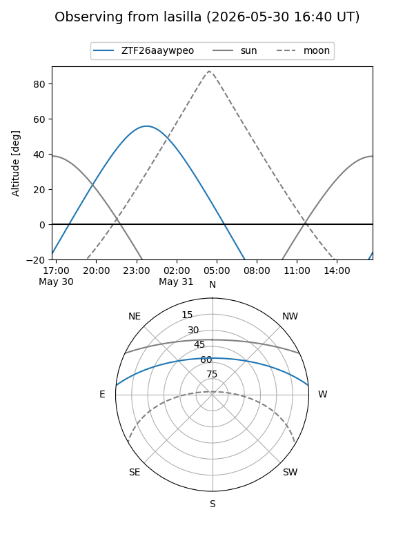
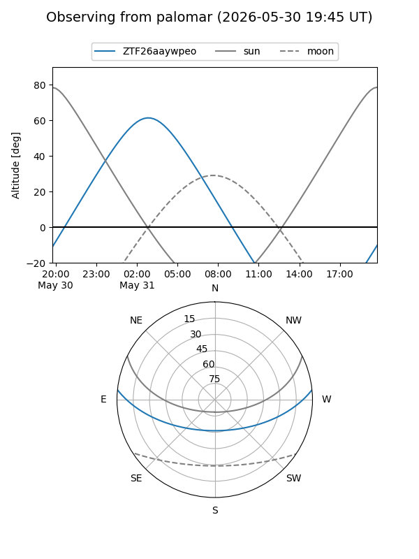

ZTF26aaywpeo
Target ZTF26aaywpeo at 2026-05-31 06:32
Aliases and brokers:
lsst-FINK: link
lsst-Lasair: link
lsst-ALeRCE: link
ztf-FINK: link
ztf-Lasair: link
ztf-ALeRCE: link
alt names
ZTF26aaywpeo (ztf,fink_ztf)
Coordinates:
equatorial (ra, dec) = 174.0546,+4.95660
equatorial (HMS+DMS) = 11:36:13.11,+04:57:23.76
galactic (l, b) = (260.6485,+61.48944)
Flags:
Photometry:
last ztfg=19.41, ztfr=19.48
1 ztfg, 1 ztfr detections
Lightcurve
Visibility


Additional plots